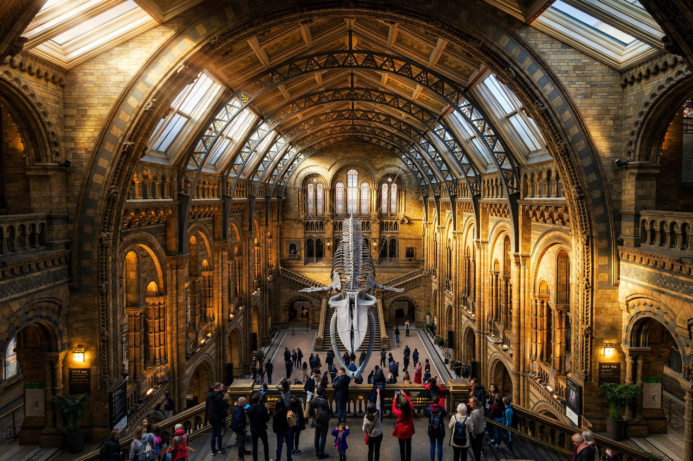

[Image: Hintze Hall with the blue whale skeleton suspended overhead]
The building and halls
Sir Alfred Waterhouse's Romanesque 'cathedral to nature' (opened 1881) centres on Hintze Hall, where a blue whale skeleton — 'Hope' — has hung from the ceiling since 2017, succeeding Dippy the Diplodocus, who occupied the hall for decades and now tours. Behind the public galleries sits the Darwin Centre's research cocoon.
Visiting
Entry to the permanent galleries is free; the homepage leads with booking, current exhibitions and events (Wildlife Photographer of the Year is the museum's famous annual competition and exhibition), and its dinosaur gallery remains a signature draw.